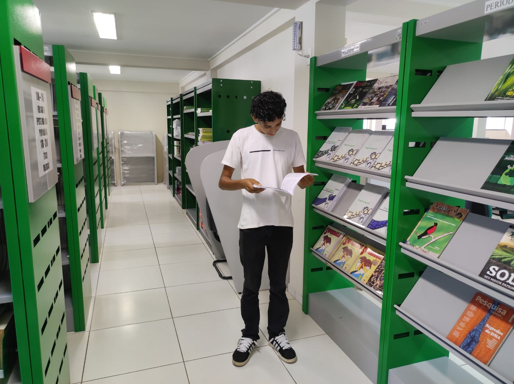
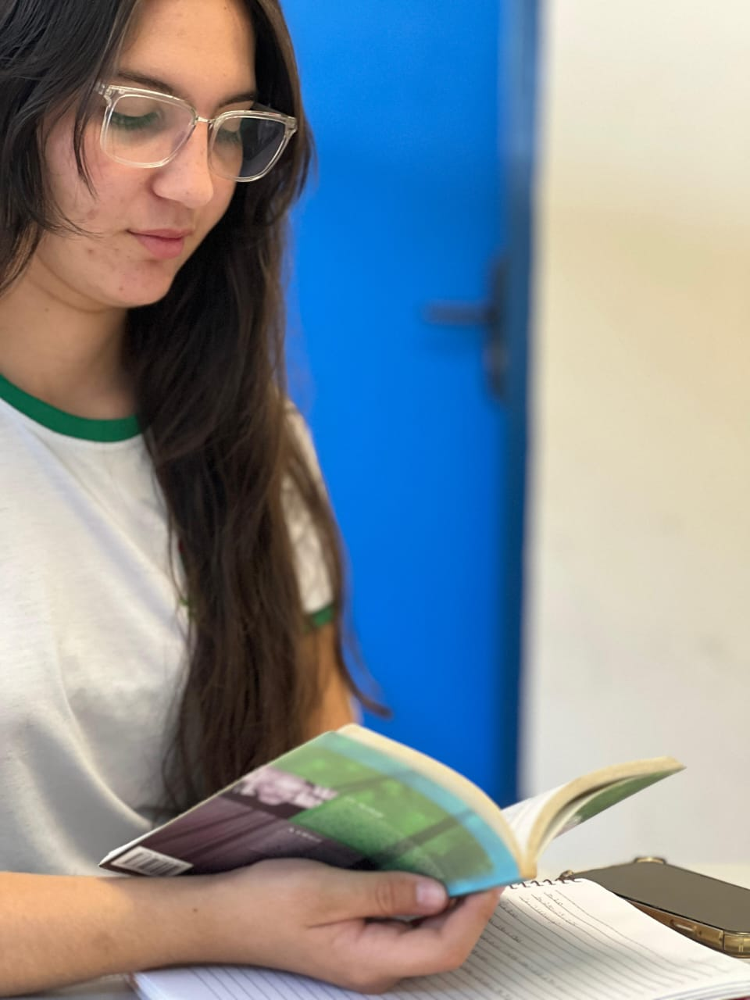
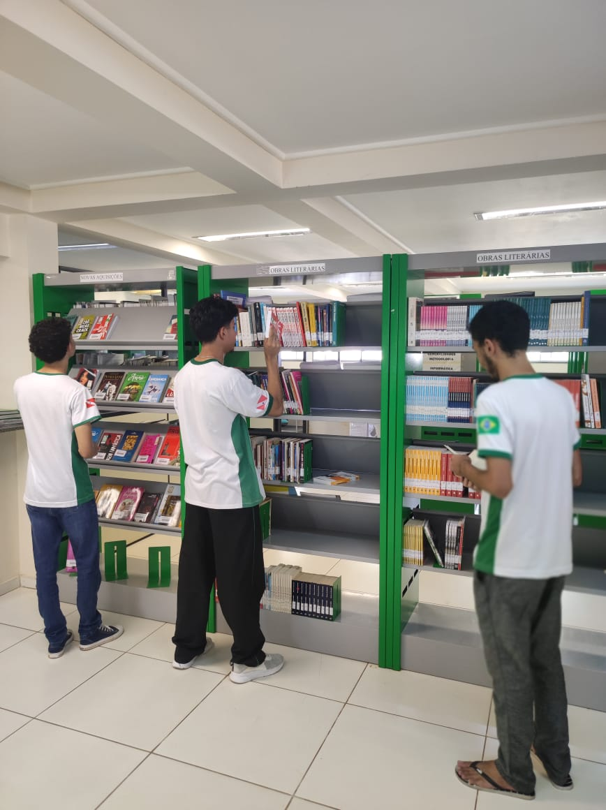
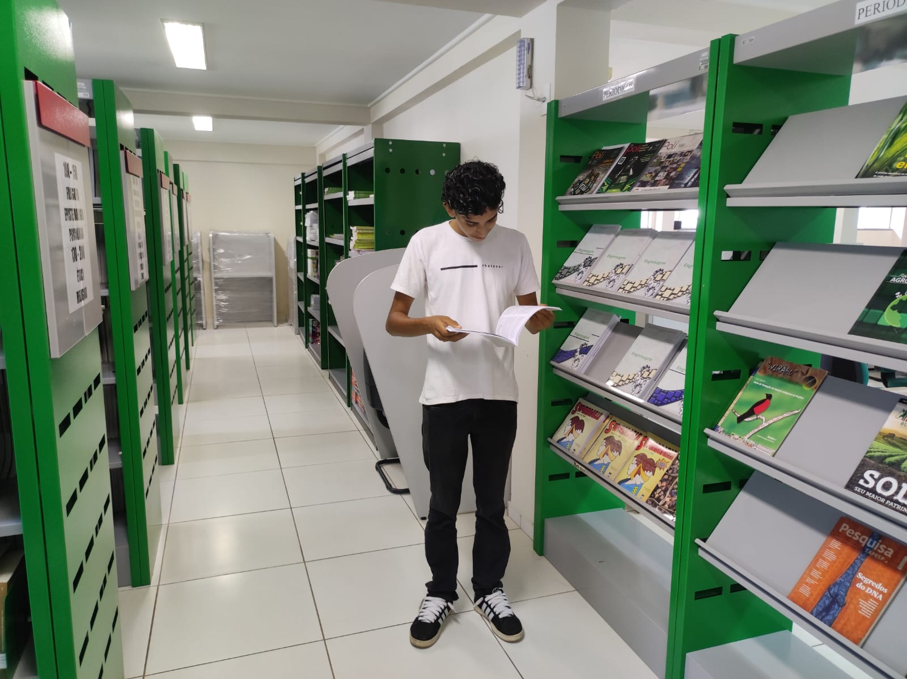
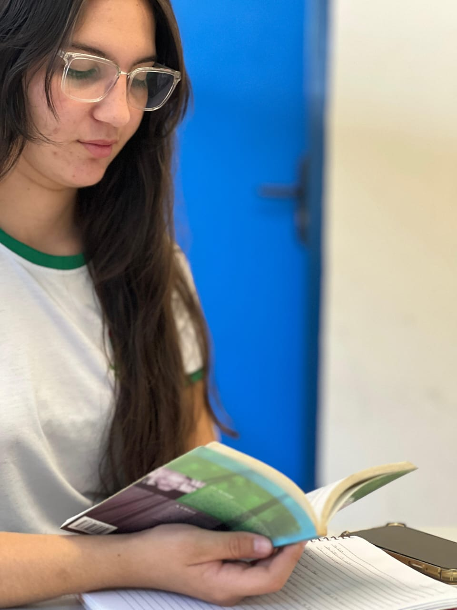
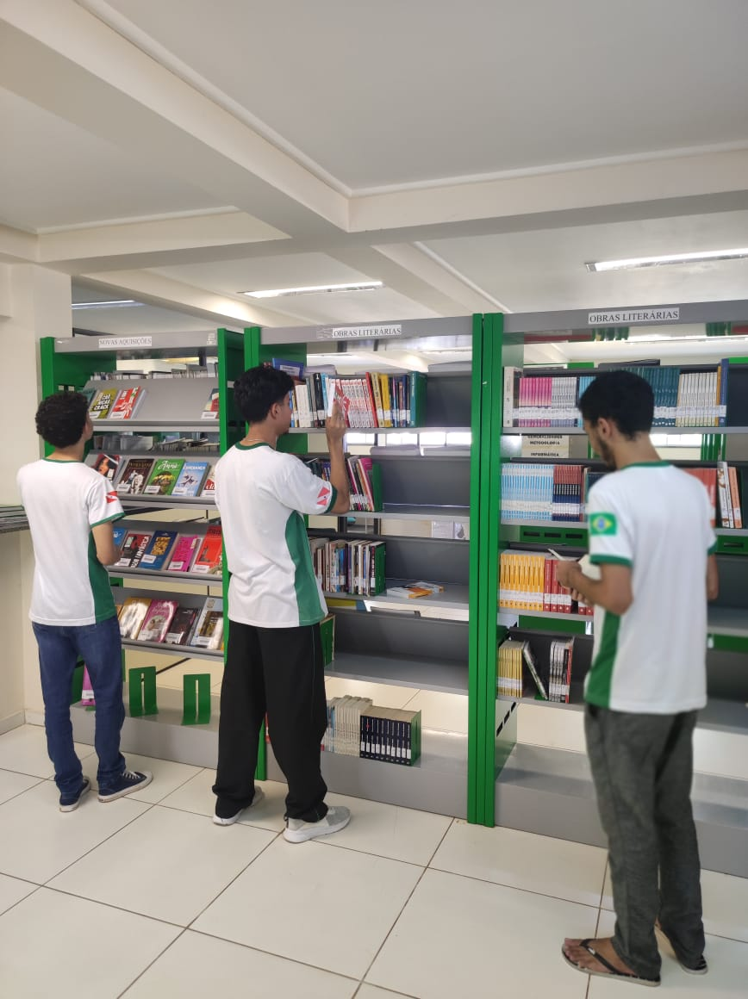

BIBLIOTECA
Library
A biblioteca é um refúgio do saber, um ambiente acolhedor, que convida os estudantes a se encantarem pela leitura. Nesse espaço climatizado, e sereno, os leitores encontram não só livros para empréstimo, mas também cantos de estudo e mãos que orientam a pesquisa. É um espaço onde o pensamento floresce e a imaginação ganha asas.
The library is a haven of knowledge, a welcoming environment that invites students to delight in reading. In this air-conditioned and serene space, readers will find not only books to borrow, but also study corners and hands that guide research. It is a space where thought flourishes and imagination takes flight.
 




